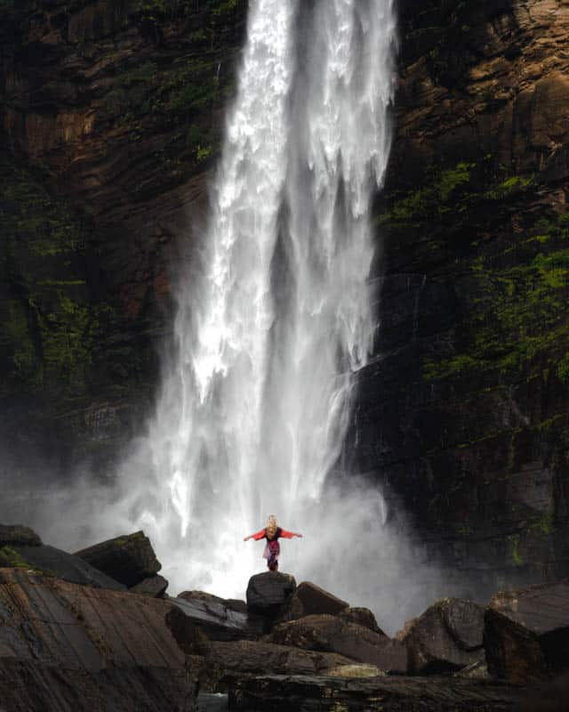

Welcome To The
" SENKADAGALA ..."
The Central Province is one of the nine provinces of Sri Lanka, the first level administrative division of the country. The Central Province is primarily in the central mountainous terrain of Sri Lanka. It is the 6th largest province by area and is home to 2.5 million people.
Places to visit in Central Province
